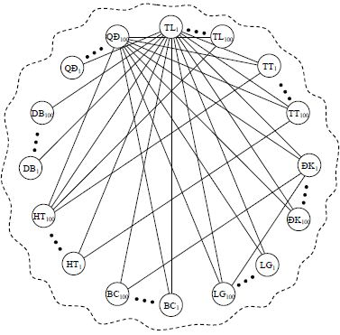
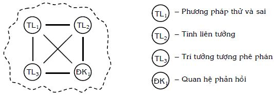

TỔNG KẾT: CÁC KIẾN THỨC CƠ SỞ CỦA PHƯƠNG PHÁP LUẬN SÁNG TẠO VÀ ĐỔI MỚI
- Nếu như quyển một “Giới thiệu: Phương pháp luận sáng tạo và đổi mới” của bộ sách “Sáng tạo và đổi mới” có mục đích giúp bạn đọc có cái nhìn tổng quan Sáng tạo học nói chung, PPLSTVĐM nói riêng, thì quyển hai và quyển ba đi sâu hơn: Trình bày các kiến thức cơ sở của PPLSTVĐM mà hạt nhân của PPLSTVĐM đề cập trong bộ sách này được coi là TRIZ.
PPLSTVĐM được xây dựng dựa trên các khoa học cơ sở, hiểu theo nghĩa, các khoa học này có đối tượng nghiên cứu và tác động là tư duy, hoặc liên quan, hỗ trợ các hoạt động tư duy như tám khoa học sau: tâm lý học, thông tin học, điều khiển học, lôgích học, phép biện chứng duy vật, khoa học hệ thống, dự báo học và lý thuyết ra quyết định. Những kiến thức cơ sở của PPLSTVĐM đề cập trong quyển hai và quyển ba là những kiến thức cần thiết tối thiểu, được rút ra từ những khoa học nói trên một cách chọn lọc, trong đó, những kiến thức khái quát được cụ thể hóa, để vận dụng vào các giai đoạn của quá trình suy nghĩ giải quyết vấn đề và ra quyết định (tư duy sáng tạo).
Trong phần này, người viết tổng kết các kiến thức cơ sở của PPLSTVĐM nhằm giúp bạn đọc không chỉ thấy cây mà còn thấy rừng; thấy tính toàn thể (tính hệ thống) của hệ thống các kiến thức cơ sở; thấy sự đa dạng các thang bậc của hệ thống các kiến thức cơ sở dùng trong tư duy giải các bài toán đa dạng tương ứng trên thực tế. Một mặt, bạn đọc có thể áp dụng ngay các kiến thức cơ sở của PPLSTVĐM vào quá trình suy nghĩ giải quyết vấn đề và ra quyết định hiện nay của mình. Người viết tin rằng, chúng sẽ đem lại nhiều ích lợi cho bạn. Mặt khác, nếu bạn sử dụng các công cụ của PPLSTVĐM (sẽ được trình bày từ quyển bốn trở đi), các kiến thức cơ sở giúp bạn hiểu cơ sở khoa học, các ý nghĩa, giá trị của chúng và sử dụng chúng một cách chủ động, sáng tạo với hiệu quả cao nhất có thể có.
- Như chúng ta đã biết, phương pháp lâu đời và phổ biến nhất dùng để giải quyết vấn đề và ra quyết định là phương pháp thử và sai (xem Chương 2: Sáng tạo một cách tự nhiên của quyển một). Phương pháp thử và sai còn gọi là phương pháp tự nhiên, hiểu theo nghĩa: Trong tự nhiên, các sinh vật giải quyết các vấn đề tồn tại, tiến hóa và phát triển của chúng bằng phương pháp thử và sai; phần lớn mọi người dùng phương pháp thử và sai một cách tự nhiên (có sẵn thế nào thì dùng thế đó) như hít thở, đi lại… mà không có ý thức xem quá trình suy nghĩ hoạt động ra sao, bị ảnh hưởng bởi những yếu tố gì, làm những gì và làm thế nào để cải tiến các suy nghĩ của mình… Phương pháp thử và sai có những ưu điểm nhất định, nhưng đồng thời có không ít các nhược điểm.
Kể từ sau Chiến tranh thế giới lần thứ hai, cùng với sự xuất hiện các nhân tố mới và các diễn tiến của chúng, nảy sinh các hệ quả (xem mục nhỏ 4.3.2 Các khuynh hướng, thách thức và hệ quả của quyển một):
- Số lượng các bài toán trên một đơn vị không–thời gian và đầu người ngày càng tăng.
- Thời gian cho phép giải bài toán rút ngắn lại.
- Mức độ khó của các bài toán tăng, trong đó, xuất hiện càng nhiều loại bài toán đòi hỏi nhiều ngành nghề, chuyên môn khác nhau cùng tham gia giải.
- Xuất hiện càng nhiều các loại bài toán mới, trước đây chưa có.
Các nhược điểm của phương pháp thử và sai ngày càng bộc lộ rõ trên quy mô lớn và trở nên không thể chấp nhận được. Nói cách khác, ở những nước phát triển nhất lúc đó, đã xuất hiện nhu cầu xã hội phải cải tiến phương pháp thử và sai hoặc/và đưa ra những phương pháp giải quyết vấn đề và ra quyết định thay thế phương pháp thử và sai. Đây chính là nguyên nhân cơ bản nhất để Sáng tạo học được nhớ lại, phát triển và PPLSTVĐM được cộng đồng các nhà nghiên cứu xây dựng một cách có ý thức.
Trong lĩnh vực PPLSTVĐM, TRIZ được đánh giá là trường phái nghiên cứu, xây dựng hệ thống của các công cụ một cách khoa học, toàn diện, đầy đủ nhất và đạt được nhiều thành tựu nhất (xem Chương 4: Tổng quan các kết quả đạt được trong lĩnh vực PPLSTVĐM của quyển một).
- PPLSTVĐM có mục đích hoàn thiện (tăng năng suất, hiệu quả, về lâu dài, tiến tới điều khiển) quá trình suy nghĩ giải quyết vấn đề và ra quyết định (tư duy sáng tạo) của mỗi người (xem mục 4.2 PPLSTVĐM là gì? của quyển một).
Quá trình suy nghĩ giải quyết vấn đề và ra quyết định (tư duy sáng tạo), trong tư cách đối tượng nghiên cứu và chịu tác động biến đổi của khoa học, là đối tượng rất phức tạp. Do vậy, một cách tất yếu, ở đây cần có sự đóng góp của nhiều khoa học liên quan để xây dựng PPLSTVĐM. Những đóng góp dưới dạng các kiến thức của các khoa học cơ sở cần được:
Hiểu rõ ý nghĩa, giá trị và sự cần thiết để chọn ra phần kiến thức của khoa học cơ sở cho trước, phù hợp với việc xây dựng PPLSTVĐM.
Liên kết với nhau một cách thích hợp thành hệ thống có tính toàn thể là cung cấp các quan điểm, nguyên vật liệu, công cụ để xây dựng, chế tạo các công cụ của PPLSTVĐM.
Sử dụng ở các thang bậc hệ thống khác nhau như hệ thống, các hệ dưới, các hệ dưới nữa… Điều này cũng tương tự như trong hóa học và vật lý: Nếu coi tất cả các nguyên tử của tất cả các nguyên tố hóa học trong vũ trụ là hệ thống thì trên thực tế, người ta sử dụng chúng ở các thang bậc hệ thống khác nhau. Ví dụ, các đối tượng vật chất vĩ mô như các đồ vật có cấu tạo từ nhiều hợp chất tạo thành là các hệ dưới. Các hợp chất riêng rẽ H2O, H2SO4, NaCl, HCl… là các hệ dưới nữa. Các đơn chất như H2, O2, Fe, Cu… là các hệ dưới dưới nữa. Các ion và điện tử là các hệ dưới dưới dưới nữa…
Tiếp theo đây, người viết sẽ tổng kết các kiến thức cơ sở đã trình bày trong quyển hai và quyển ba theo các điểm vừa nêu.
- Thứ nhất, về việc chọn các kiến thức từ các khoa học cơ sở của PPLSTVĐM:
- Tâm lý học là khoa học nghiên cứu các sự kiện, hiện tượng, quy luật, cơ chế của tinh thần (tâm hồn) như là sự phản ánh dưới dạng các hình ảnh hình thành trong óc của con người về hiện thực. Trên cơ sở và nhờ sự phản ánh đó, sự điều khiển hành vi và hoạt động mang tính cá nhân được thực hiện.
Trong các kết quả nghiên cứu của các bộ môn thuộc tâm lý học, người viết chỉ rút ra những kiến thức về, hoặc liên quan đến quá trình suy nghĩ giải quyết vấn đề và ra quyết định, và các hành động thực hiện của người giải trên thực tế. Những kiến thức này được trình bày tập trung trong Chương 5 và Chương 6 của quyển hai. Đấy là các kiến thức trả lời các câu hỏi như ý nghĩ này hoặc ý nghĩ khác của cá nhân xuất hiện, biến đổi, phát triển như thế nào? Tại sao? Nhờ sự tham gia của các hiện tượng tâm lý nào?… Những ý nghĩ – kết quả, sản phẩm của quá trình tư duy diễn tiến theo các quy luật tâm lý là các khái niệm, ý tưởng…
Thông thường, người ta chỉ thực sự suy nghĩ, thậm chí, bị bắt buộc suy nghĩ khi có vấn đề (bài toán). Các vấn đề có nguồn gốc là các nhu cầu cá nhân đòi hỏi phải được thỏa mãn mà cá nhân chưa biết cách nào làm thỏa mãn, hoặc chưa biết cách tối ưu trong một số cách đã biết. Cách suy nghĩ và hành động giải quyết vấn đề của phần lớn mọi người, về cơ bản, là phương pháp thử và sai với những biến thể nhất định.
Suy nghĩ của cá nhân không khách quan. Nó bị ảnh hưởng, chi phối lớn (có thể tốt, có thể xấu tùy theo các tình huống, điều kiện cụ thể) của các nhu cầu, xúc cảm, thói quen (tự nguyện), hành động của cá nhân. Ngoài ra, suy nghĩ của cá nhân còn chịu sự tác động của môi trường và tương tác giữa cá nhân với môi trường.
Tư duy không phải là nguồn gốc của hành động, cũng không phải là động lực chính của hành động, hiểu theo nghĩa, có ý nghĩ gì trong đầu thì cá nhân chắc chắn sẽ hành động thực hiện ý nghĩ nấy. Ngoài các hành động thực hiện theo thói quen hoặc bản năng, hiện tượng tâm lý được cá nhân dễ cảm nhận và chi phối khá trực tiếp, mạnh mẽ các hành động của cá nhân, lại là các xúc cảm của người đó. Do vậy, sau khi tìm ra lời giải đúng của bài toán cho trước dưới dạng ý tưởng, người giải cần phải có xúc cảm dương đủ mạnh tương ứng, mới có thể có những hành động biến ý tưởng lời giải thành hiện thực trên thực tế.
Tình hình trở nên phức tạp hơn nhiều, khi ngoài ý thức, còn có sự hoạt động của các cơ chế tiềm thức, vô thức không được người suy nghĩ nhận biết và các cơ chế này còn hầu như chưa được khoa học nghiên cứu, tác động biến đổi theo đúng nghĩa.
Cũng trong Chương 5 và Chương 6 của quyển hai, ngoài việc trình bày các hiện tượng tâm lý đóng vai trò không thể thiếu trong quá trình suy nghĩ giải quyết vấn đề và ra quyết định như trí nhớ, tính ì tâm lý, ngôn ngữ, ký hiệu, hình vẽ, liên tưởng, linh tính, trí tưởng tượng…, người viết còn cố gắng xác định các phạm vi áp dụng của chúng, cung cấp các lời khuyên phát huy các mặt mạnh và hạn chế các mặt yếu của các hiện tượng tâm lý.
- Khoa học thông tin là lĩnh vực bao gồm các phương pháp khoa học, công nghệ, nghiên cứu và phát triển các phương tiện liên quan đến thông tin, các quá trình hình thành, thu thập, truyền, biến đổi, lưu trữ, truy cập, tích lũy và nhân bản thông tin, được gọi chung là các quá trình thông tin.
Nhìn theo quan điểm thông tin, quá trình suy nghĩ giải quyết vấn đề và ra quyết định là một loại quá trình truyền và biến đổi thông tin, xảy ra bên trong bộ óc của con người. Do vậy, một loạt các khái niệm, ý tưởng của khoa học thông tin, đặc biệt, các khái niệm, ý tưởng có trong chuỗi Claude Shannon được nhấn mạnh và rút ra làm kiến thức cơ sở cho PPLSTVĐM. Các khái niệm, ý tưởng nói trên, một mặt, giúp diễn đạt, trình bày quá trình suy nghĩ rõ ràng, rành mạch hơn. Mặt khác, chúng giúp tìm hiểu và xây dựng mô hình thông tin của quá trình suy nghĩ.
Tuy nhiên, quá trình suy nghĩ giải quyết vấn đề và ra quyết định không chỉ đơn thuần là quá trình truyền, biến đổi thông tin theo cách hiểu thông thường, mà cao hơn, nhờ sự tham gia của các hiện tượng tâm lý, quá trình này làm thay đổi thông tin về chất: Đầu ra của quá trình suy nghĩ giải quyết vấn đề và ra quyết định là quyết định (lời giải cuối cùng của bài toán) mà trước quá trình đó chưa có. Nhờ vậy, người giải đạt được mục đích đề ra (tính ích lợi). Nói cách khác, quá trình suy nghĩ giải quyết vấn đề và ra quyết định là quá trình biến đổi thông tin thành tri thức, tri thức đã biết thành tri thức mới với sự tham gia tích cực của các hiện tượng tâm lý. Trong ý nghĩa này, các khái niệm, ý tưởng về truyền và biến đổi thông tin được trình bày lồng ghép, kết hợp với các hiện tượng tâm lý (xem Chương 6: Tư duy sáng tạo: Nhìn theo góc độ thông tin – tâm lý của quyển hai).
- Điều khiển học là khoa học nghiên cứu các thuộc tính, nguyên tắc chung của các quá trình và hệ thống điều khiển trong các thiết bị kỹ thuật, các cơ thể sống, các tổ chức của con người…
Điều khiển học là khoa học cơ sở của PPLSTVĐM vì các lý do sau:
Mục đích lâu dài của PPLSTVĐM là điều khiển tư duy sáng tạo (quá trình suy nghĩ giải quyết vấn đề và ra quyết định). Để làm điều đó, PPLSTVĐM phải sử dụng các kiến thức về điều khiển.
PPLSTVĐM còn có mục đích đóng góp vào việc điều khiển thế giới bên trong của mỗi cá nhân (mỗi cá nhân biết làm chủ bản thân mình về các nhu cầu, xúc cảm, thói quen, động cơ hành động). Đây là yếu tố quan trọng trong xây dựng, phát triển nhân cách nói chung, nhân cách sáng tạo nói riêng (xem các mục 8.4 và 8.5 của quyển hai).
Không ít các bài toán cần giải trong cuộc sống, công việc có mục đích cần đạt là điều khiển hệ thống nào đó.
Tăng tính điều khiển là quy luật phát triển, trước hết, của các cơ thể sống, các hệ thống nhân tạo. Quy luật này sẽ được trình bày chi tiết trong quyển bảy “Các quy luật phát triển hệ thống” của bộ sách “Sáng tạo và đổi mới”.
Các ý tưởng cơ bản chung của điều khiển học được trình bày trong mục 8.2 của quyển hai. Trong đó, người viết nhấn mạnh ý nghĩa, vai trò và giá trị của quan hệ phản hồi các loại đối với các mục đích điều khiển. Đồng thời, người viết cũng nêu chương trình tóm tắt những việc cần làm để thực hiện việc điều khiển.
- Lôgích học hình thức là khoa học nghiên cứu các hình thức của tư duy như các khái niệm, phán đoán, suy luận, mà không xét đến nội dung cụ thể của chúng và các quy luật, nguyên tắc, quy tắc biến đổi mà chúng phải tuân theo để có những kết luận đúng (kết luận phù hợp với thực tiễn khách quan).
Lôgích học hình thức được dạy khá rộng rãi trong các trường học ở nước ta. Đối với những người chưa được học lôgích học hình thức một cách chính thức, ở mức độ nào đó, họ đã học lôgích học hình thức một cách gián tiếp thông qua việc học sử dụng ngôn ngữ (nói, viết), học các môn khoa học chính xác như toán, vật lý, hóa học, học thông qua giao tiếp, thảo luận, tranh luận, đọc báo chí…
Nhìn dưới góc độ tâm lý học, tư duy của cá nhân mang tính chủ quan cao. Do vậy, sử dụng lôgích hình thức, người suy nghĩ sẽ chủ động biến đổi các ý nghĩ của mình dưới dạng các khái niệm, phán đoán theo cách suy luận thích hợp, để có được các kết luận tin cậy. Đây là điều rất cần thiết, đặc biệt, trong các giai đoạn tiếp thu, xử lý thông tin của quá trình suy nghĩ giải quyết vấn đề và ra quyết định. Lôgích hình thức được trình bày trong Chương 8: Tư duy lôgích của quyển sách này.
Ngoài ra, cũng trong Chương 8, người viết còn nêu những ý, kèm theo các ví dụ nhấn mạnh rằng, người sử dụng lôgích hình thức trong tư duy cần chú ý phạm vi áp dụng của lôgích hình thức và tránh sử dụng lôgích hình thức một cách máy móc, cứng nhắc khi phải giải các bài toán thực tế, ở đó đòi hỏi có những lời giải không cực đoan.
- PPLSTVĐM có triết học cơ sở là phép biện chứng duy vật vì cần phải thỏa mãn đồng thời các yêu cầu sau:
Để có PPSLTVĐM với phạm vi áp dụng rộng, PPLSTVĐM phải được xây dựng dựa trên các kiến thức là kết quả nghiên cứu, phát hiện các quy luật chung nhất của tự nhiên, xã hội và tư duy. Khoa học đó là triết học.
Đi tìm các quy luật sáng tạo và đổi mới tức là đi tìm các quy luật phát triển (xem mục nhỏ 5.2.1 của quyển một). Trong các loại triết học, phép biện chứng duy vật chính là triết học nghiên cứu và phát hiện các quy luật chung nhất về sự phát triển của tự nhiên, xã hội và tư duy.
Phép biện chứng duy vật có khả năng cung cấp các chuẩn mực, quy tắc chung, giúp xây dựng các phương pháp cụ thể hơn chính nó nhằm tạo ra các hoạt động thực tiễn biến đổi thế giới và hoàn thiện chính con người.
Trong phần đầu của Chương 9: Tư duy biện chứng của quyển sách này, nhằm mục đích ôn tập, người viết trích tóm tắt nội dung nguyên lý về sự phát triển và các quy luật cơ bản về sự phát triển của phép biện chứng, là những kiến thức tối thiểu liên quan đến PPLSTVĐM. Tiếp theo, người viết trình bày một số kết quả mà TRIZ thu được trong quá trình cụ thể hóa các luận điểm khái quát của phép biện chứng để vận dụng vào lĩnh vực sáng tạo và đổi mới. Trong số các kết quả thu được, cần đặc biệt nhấn mạnh việc tìm ra ba loại mâu thuẫn (hành chính, kỹ thuật, vật lý) có trong giải quyết vấn đề và ra quyết định. Đồng thời, người viết cũng dẫn ra nhiều ví dụ cụ thể minh họa sự phát triển nhờ sáng tạo và đổi mới mà thực chất của sự phát triển (hoặc sáng tạo và đổi mới) đó chính là giải quyết các loại mâu thuẫn nói trên. Các công cụ của TRIZ giúp phát hiện và giải quyết các loại mâu thuẫn sẽ được trình bày chi tiết hơn trong những quyển sách sau.
- Khoa học hệ thống có thể hiểu là tập hợp các nghiên cứu ở các mức độ khái quát khá cao, bổ sung cho nhau về hệ thống và về những gì liên quan đến hệ thống, kể cả các nghiên cứu ứng dụng giải quyết các vấn đề của các hệ thống thực tiễn.
Trong Chương 10: Tư duy hệ thống của quyển sách này, ngoài một số thông tin tổng quan, người viết tập trung trình bày những đóng góp của khoa học hệ thống vào tư duy giải quyết vấn đề và ra quyết định, sau khi cụ thể hóa một số luận điểm khái quát của khoa học hệ thống. Nếu như tư duy thông thường chỉ chủ yếu tập trung suy nghĩ vào hệ thống có trong bài toán và bài toán như là hệ thống ở thời gian hiện tại, thì tư duy hệ thống đòi hỏi loại suy nghĩ nhìn xa (cả quá khứ, hiện tại, tương lai), trông rộng (bao quát nhiều thang bậc hệ thống) và xem xét toàn diện (có nhiều góc độ nhìn cả chủ quan lẫn khách quan). Nhờ vậy, người suy nghĩ giải bài toán hiểu bài toán tốt hơn, xử lý các thông tin đầy đủ hơn và tránh bỏ sót những gợi ý giúp phát các ý tưởng giải bài toán.
- Dự báo học là khoa học nghiên cứu các nguyên tắc chung xây dựng, thực hiện sự xây dựng các phương pháp làm dự báo về sự phát triển của các đối tượng có bản chất bất kỳ và nghiên cứu các quy luật của quá trình đưa ra các dự báo.
Những kiến thức ứng dụng (những phương pháp dự báo) rút ra từ dự báo học được trình bày tập trung trong mục 11.4 của quyển sách này. Chúng cần cho PPLSTVĐM vì:
Khi giải bài toán, người giải phải đưa ra được các ý tưởng là các lời giải của bài toán, mà các ý tưởng lời giải của bài toán chính là các hình ảnh tương lai của hệ thống có trong bài toán.
Sáng tạo và đổi mới tạo ra sự phát triển, mà sự phát triển nhìn theo thời gian thực (thời gian theo nghĩa tuyệt đối) chính là những gì sẽ xảy ra trong tương lai, cần phải được dự báo.
Trong những trường hợp cụ thể, các phương pháp dự báo có những đóng góp tạo sự định hướng trong suy nghĩ giải quyết vấn đề và ra quyết định.
- Quyết định được hiểu là phương án lời giải tối ưu mà người giải thực hiện (hành động) trên thực tế. Quyết định được lựa chọn rút ra từ các phương án lời giải khác nhau theo một trình tự nhất định (xem mục nhỏ 11.5.1 Tiêu chuẩn của một quyết định tốt: Nhìn theo quan điểm hệ thống phát triển bền vững của quyển sách này). Tuy nhiên phương án lời giải “tối ưu”, “đúng” hoặc “tốt nhất” thu được trong cách ra quyết định theo cách thông thường, nhiều khi, là lời giải trung dung, thỏa hiệp giữa các nhân tố mâu thuẫn với nhau.
Tư duy biện chứng và tư duy hệ thống bổ sung yêu cầu, đòi hỏi người ra quyết định phải giải quyết mâu thuẫn, phải tính đến tác động của quyết định lên các hệ thống có các mối liên kết với hệ thống có trong bài toán và bài toán như là hệ thống. Từ đó xây dựng “tiêu chuẩn của quyết định tốt”: Quyết định tốt phải đạt được mục đích phát triển đề ra trong bài toán và không làm ảnh hưởng xấu đến các hệ thống khác trong không gian hệ thống (quyết định làm cho mọi hệ thống đều thắng).
- Nói một cách tóm tắt và khái quát, các kiến thức rút ra từ các khoa học cơ sở giúp các nhà nghiên cứu trong lĩnh vực PPLSTVĐM xây dựng loại tư duy: Nhìn xa, trông rộng, xem xét toàn diện, thấy và giải quyết các mâu thuẫn để tạo ra sự phát triển liên tục, đầy đủ, ổn định và bền vững. Đây là loại tư duy có thể dạy và học được, cần trang bị cho mỗi người để giải quyết tốt các vấn đề gặp trong công việc, đời sống suốt cuộc đời của mỗi người, giúp mỗi người trở nên hạnh phúc hơn.
- Thứ hai, về các mối liên kết giữa các kiến thức, rút ra từ các khoa học cơ sở của PPSLTVĐM nói trên:
Các kiến thức rút ra từ các khoa học cơ sở của PPSLTVĐM, cũng như bản thân các khoa học đó, không độc lập với nhau mà liên quan, có những phần giao nhau, hỗ trợ, bổ sung cho nhau. Do vậy, bạn đọc cần coi các kiến thức trình bày trong quyển hai và quyển ba tạo thành hệ thống các kiến thức cơ sở trực tiếp của PPLSTVĐM (xem Hình 144).
Hình 144: Hệ thống các kiến thức cơ sở của phương pháp luận sáng tạo và đổi mới (PPLSTVĐM)
Để tránh rườm rà, thay vì từng mối liên kết được diễn tả bằng hai đường nối với hai mũi tên ngược chiều nhau (xem Hình 123: Biểu diễn hệ thống một cách tượng trưng), trên Hình 144, từng mối liên kết được biểu diễn thành một đoạn thẳng nối hai yếu tố lại với nhau.
Khi dùng từ “hệ thống” đối với các kiến thức cơ sở của PPLSTVĐM, chúng ta cần nhớ đến và vận dụng các luận điểm về hệ thống, được trình bày trong Chương 10: Tư duy hệ thống của quyển sách này. Ví dụ:
- Hệ thống này gồm tám yếu tố (các kiến thức rút ra từ tám khoa học cơ sở tương ứng). Tám yếu tố này liên kết với nhau, phản ánh trong sự giao nhau một phần, tác động qua lại, bổ sung, hỗ trợ nhau. Trên thực tế, bạn đọc có thể thấy sự liên kết giữa các khoa học thể hiện ở những chỗ như: Khi trình bày kiến thức khoa học này, người viết phải sử dụng các khái niệm, ý tưởng của các khoa học khác; người viết phải chú thích khá thường xuyên: xem lại những gì đã trình bày về các khoa học đề cập trước đó, hoặc sẽ nói ý này chi tiết hơn khi trình bày các khoa học sau…
- Toàn bộ tập hợp tám yếu tố liên kết với nhau này có tính toàn thể (tính hệ thống): Cung cấp các kiến thức (hiểu theo nghĩa rộng nhất) mang tính cơ sở để xây dựng các công cụ đa dạng có phạm vi áp dụng rộng của PPLSTVĐM. Hệ thống các kiến thức cơ sở này có thể ví như hệ thống các khái niệm, quan điểm, quy tắc, quy luật… đóng vai trò các nguyên vật liệu cơ sở, máy cái để xử lý các thông tin về sự phát triển và xây dựng các công cụ dùng để suy nghĩ và thực hiện giải các bài toán đa dạng với các mức khó khác nhau.
- Các kiến thức cơ sở nói trên phát triển theo thời gian (vì các khoa học cơ sở tương ứng là các hệ thống mở), hiểu theo nghĩa, được bổ sung thêm những kết quả nghiên cứu mới, loại bỏ các kiến thức lạc hậu, được cụ thể hóa, khái quát hóa, được xem xét theo những cách tiếp cận mới. Do vậy, các nhà nghiên cứu xây dựng các công cụ của PPLSTVĐM cần tính đến sự phát triển của các kiến thức cơ sở theo thời gian để có thể sử dụng được những thành tựu mới nhất.
- Mối liên kết giữa hệ thống các kiến thức cơ sở và PPLSTVĐM là sự tác động qua lại (xem Hình 145).
Hình 145: Tương tác giữa hệ thống các kiến thức cơ sở và PPLSTVĐM
Đây là mối liên kết có thể và cần để tạo nên quan hệ phản hồi dương tốt (xem 8.2 Điều khiển học: Một số ý tưởng cơ bản chung của quyển hai):
Hệ thống các kiến thức cơ sở cung cấp các kiến thức nghiên cứu, xây dựng các phương pháp giải quyết vấn đề và ra quyết định hiệu quả hơn phương pháp thử và sai. Đến lượt mình, các phương pháp này giúp giải quyết một cách có hiệu quả các vấn đề của chính các khoa học cơ sở, thu thêm những kiến thức mới. Các kiến thức mới cho phép PPLSTVĐM xây dựng các phương pháp hiệu quả hơn nữa. Nhờ áp dụng các phương pháp hiệu quả đó, các khoa học cơ sở lại thu được thêm nhiều kiến thức mới hơn nữa. Và cứ như thế… hai hệ thống này hỗ trợ cho nhau cùng phát triển.
- Hệ thống các công cụ của PPLSTVĐM còn liên kết với bất kỳ hệ thống nào khác ngoài hệ thống các kiến thức cơ sở, nếu ở đó có yêu cầu giải quyết vấn đề và ra quyết định. Mối liên kết giữa hệ thống các công cụ của PPLSTVĐM với các hệ thống đó cũng có phần tương tự như mối liên kết (quan hệ phản hồi dương tốt) giữa hệ thống các công cụ của PPLSTVĐM với hệ thống các kiến thức cơ sở.
- Trên thực tế, mỗi trong tám yếu tố (xem Hình 144) lại thỏa mãn định nghĩa hệ thống (xem mục nhỏ 11.2.1 Một số khái niệm cơ bản và ý tưởng chung về hệ thống). Do vậy, có thể coi tám yếu tố là tám hệ dưới của hệ thống các kiến thức cơ sở của PPLSTVĐM. Ví dụ, hệ dưới trong cách xem xét như là tập hợp các yếu tố tâm lý, có thể được biểu diễn như trình bày trên Hình 146 dưới đây:

Hình 146: Hệ dưới “tâm lý” – TL trong cách xem xét như là tập hợp các hiện tượng tâm lý liên kết với nhau, cần cho suy nghĩ giải quyết vấn đề
Nếu thay đổi cách xem xét, ví dụ xem xét hệ dưới TL theo sự đóng góp của các hiện tượng tâm lý vào các giai đoạn thực hiện giải bài toán (xem 2.2 Một số khái niệm cơ bản và các ý nghĩa của chúng của quyển một và 7.2 Mô hình quá trình suy nghĩ giải quyết vấn đề và ra quyết định của quyển hai) thì chúng ta lại có biểu diễn khác (xem Hình 147):

Hình 147: Hệ dưới “tâm lý” – TL trong cách xem xét như là quá trình suy nghĩ và thực hiện giải bài toán, gồm sáu giai đoạn
Tình hình tương tự như vậy đối với bảy hệ dưới khác TT, ĐK, LG, BC, HT, DB, QĐ.
- Mỗi yếu tố thuộc các hệ dưới, ví dụ hệ dưới tâm lý (xem hình 146 và hình 147), lại thỏa mãn định nghĩa hệ thống (trí nhớ gồm nhiều loại trí nhớ liên kết nhau…). Do vậy, mỗi yếu tố của hệ dưới có thể biểu diễn thành các hệ dưới nữa và cứ như thế cho đến những ý (khái niệm cụ thể) không chia nhỏ thêm nữa (do khách quan hoặc chủ quan) được gọi là các yếu tố cuối cùng.
Để thuận tiện cho sự trình bày tiếp theo, người viết giả sử, mỗi hệ dưới trong tám hệ có 100 yếu tố cuối cùng và chúng được ký hiệu như sau:
TL - TL1, TL2, … , TL100
TT - TT1, TT2, … , TT100
ĐK - ĐK1, ĐK2, … , ĐK100
LG - LG1, LG2, … , LG100
BC - BC1, BC2, … , BC100
HT - HT1, HT2, … , HT100
DB - DB1, DB2, … , DB100
QĐ - QĐ1, QĐ2, … , QĐ100
Lúc đó hệ thống các kiến thức cơ sở của PPLSTVĐM (xem Hình 144), được biểu diễn chi tiết đến tận các yếu tố cuối cùng có dạng như trên Hình 148 dưới đây:

Hình 148: Hệ thống các kiến thức cơ sở của PPLSTVĐM trong cách xem xét chi tiết đến các yếu tố cuối cùng
Để tránh rườm rà, trên Hình 148 chỉ vẽ một số yếu tố và mối liên kết. Hệ thống các kiến thức cơ sở của PPLSTVĐM được biểu diễn trên hình 148, có 800 yếu tố và về mặt nguyên tắc, có thể có 800 x (800 - 1) = 800 x 799 = 6310.200 các mối liên kết. Từ đây, chúng ta có thể thấy tiềm năng của hệ thống các kiến thức cơ sở là rất lớn và cần khai thác, sử dụng tiềm năng này để xây dựng các công cụ của PPLSTVĐM.
- Thứ ba, về các cách thức khai thác, sử dụng hệ thống các kiến thức cơ sở.
- Các hệ thống như ôtô, tàu thủy, máy bay thường được khai thác, sử dụng như các hệ thống trọn vẹn, hiểu theo nghĩa, nếu chỉ khai thác sử dụng một số bộ phận (yếu tố) thì không có lợi như chúng được thiết kế ra. Ví dụ, nếu sử dụng phần còn lại của máy bay sau khi bỏ cánh máy bay, thì máy bay thay đổi chức năng, không bay được nữa (tính toàn thể bị mất hiệu lực) và là một sự lãng phí lớn. Lúc này, giỏi lắm máy bay chỉ hoạt động như xe buýt.
Hệ thống các kiến thức cơ sở khác với các hệ thống kiểu vừa nêu trên ở chỗ, các bộ phận (các yếu tố cuối cùng, các tổ hợp các yếu tố cuối cùng) của hệ thống các kiến thức cơ sở có thể và cần được khai thác, sử dụng để nghiên cứu xây dựng các công cụ đa dạng của PPLSTVĐM, phù hợp với sự đa dạng (về lĩnh vực, về các mức độ khó, về các điều kiện, yêu cầu giải) của các bài toán có trên thực tế. Nói cách khác, nhìn theo quan điểm hệ thống, hệ thống các kiến thức cơ sở của PPLSTVĐM được khai thác, sử dụng ở các thang bậc hệ thống khác nhau, từ hệ thống đến các hệ dưới, các hệ dưới nữa… đến tận các yếu tố cuối cùng.
Nhằm mục đích minh họa, Hình 149 dưới đây mô tả một số trong vô số các bộ phận có thể có, “tháo ra” từ hệ thống các kiến thức cơ sở, mà các bộ phận đó cũng chính là các hệ thống (hiểu theo nghĩa tương đối) với các thang bậc hệ thống khác nhau, góp phần xây dựng hệ thống đa dạng các công cụ của PPLSTVĐM.

Hình 149: Khai thác và sử dụng hệ thống các kiến thức cơ sở ở các thang bậc hệ thống có thể có
- Mỗi hệ thống trên Hình 149 có tính toàn thể (tính hệ thống) của mình. Như chúng ta đã biết, một mặt, tính toàn thể là sự thay đổi về chất, hiểu theo nghĩa, từng yếu tố, từng mối liên kết đứng riêng rẽ không có phẩm chất (tính chất, chức năng…) đó của toàn bộ hệ thống. Mặt khác, khi chất mới (tính toàn thể) xuất hiện, theo quy luật về lượng–chất, chất mới (tính toàn thể) ảnh hưởng (làm thay đổi) ngược trở lại các giá trị định lượng của các đại lượng phản ánh trạng thái hệ thống (xem Hình 108 và văn bản liên quan có trong mục 10.3 Về việc áp dụng phép biện chứng vào lĩnh vực sáng tạo và đổi mới). Đến lượt mình, sự thay đổi về lượng lại có thể dẫn đến sự thay đổi về chất… Do vậy, chọn các yếu tố và thiết lập giữa chúng các mối liên kết thích hợp, chúng ta có thể thu được những thay đổi về chất hoặc/và lượng mong muốn. Dưới đây là vài ví dụ minh họa cho ý vừa nêu:
- Giả sử phương pháp thử và sai là TL1, tính liên tưởng là TL2. Lập mối liên kết giữa hai yếu tố này, chúng ta có hệ thống, ký hiệu là Hệ 1 (xem Hình 150):

Hình 150: Hệ 1
Nếu người giải thiết lập được mối liên kết thích hợp giữa TL1 và TL2 thì mặc dù người giải vẫn sử dụng phương pháp thử và sai với sự trả giá cho các phép thử sai không thay đổi, vẫn có sự tiến bộ: năng suất phát ý tưởng tăng. Do vậy, xác suất có ý tưởng dẫn đến lời giải đúng tăng, thời gian giải bài toán rút ngắn lại.
- Giả sử phương pháp thử và sai là TL1, tính liên tưởng là TL2, trí tưởng tượng phê phán là TL3. Lập các mối liên kết giữa chúng, chúng ta có hệ thống ký hiệu là Hệ 2]r1:
Hình 151: Hệ 2
Nếu các mối liên kết có trong Hệ 2 là thích hợp, lúc này, sự trả giá cho các phép thử sai giảm, vì người giải phát hiện sai ngay từ trong tưởng tượng, chứ không phải chờ thực hiện thật trên thực tế mới biết sai. Điều này cũng đóng góp làm rút ngắn thêm nữa thời gian giải bài toán đã đạt được trong Hệ 1.
- Giả sử phương pháp thử và sai là TL1, tính liên tưởng là TL2, trí tưởng tượng phê phán là TL3, quan hệ phản hồi là ĐK1. Mô hình của hệ bốn yếu tố nói trên, ký hiệu là Hệ 3, được biểu diễn trên Hình 152:

Hình 152: Hệ 3
Với các mối liên kết thích hợp, quan hệ phản hồi giúp giảm số lượng các phép thử cần thử, góp phần tăng tính định hướng về phía lời giải. Điều này có thể hiểu được vì, sau mỗi lần sai (kể cả phát hiện ra nhờ trí tưởng tượng phê phán), quan hệ phản hồi rút kinh nghiệm: thứ nhất, không đưa ra các phép thử tương tự; thứ hai, kết quả của thử sai giúp hiểu bài toán đúng hơn; thứ ba, nhờ hiểu bài toán đúng hơn, các phép thử tiếp theo bớt tính mò mẫm, tăng tính lôgích, do đó, xác suất đi đến ý tưởng lời giải đúng tăng lên. Nhìn tổng thể cả 3 hệ nói trên, Hệ 3 so với Hệ 2 và Hệ 1, có thời gian giải bài toán ngắn nhất, trả giá cho các phép thử sai ít nhất, nếu Hệ 3 dùng cho các bài toán có mức khó thấp.
- Tương tự như các ví dụ Hệ 1, Hệ 2, Hệ 3, bạn đọc hãy xem xét các hệ khác có trong các Hình 146 và Hình 149. Người viết hy vọng thuyết phục được bạn đọc rằng, tiềm năng của hệ thống các kiến thức cơ sở là rất lớn, nếu như không nói là vô cùng lớn. Tiềm năng đó cần được khai thác và sử dụng một cách đa dạng (kể cả đa dạng về các thang bậc hệ thống) để xây dựng các công cụ giải, phù hợp với sự đa dạng của các bài toán (kể cả sự đa dạng về các mức độ khó).
- Cuối cùng, để kết thúc phần tổng kết các kiến thức cơ sở của PPLSTVĐM này, người viết có vài lưu ý bạn đọc về cách học, tự học bất kỳ một môn học nào.
Để cho đơn giản trong việc diễn đạt các ý tưởng muốn truyền đến bạn đọc, người viết giả sử môn học cho trước có ba phần (ba chương) chẳng hạn. Khi bạn học môn học cho trước bằng cách nghe giảng hoặc/và đọc sách, ba phần kiến thức đó được trình bày lần lượt, tuần tự theo thời gian. Tùy thuộc vào người trình bày cụ thể, có thể có một số hình thức trình bày, thể hiện một cách tượng trưng trên Hình 153:
Hình 153: Một số cách trình bày một môn học cho trước
Dưới đây là những lưu ý:
- Nếu người trình bày và người học giống như trên Hình 153a, các kiến thức mà người học thu được về môn học cho trước là những kiến thức rời rạc, dường như không ăn nhập gì với nhau (không thấy được các mối liên kết giữa chúng).
- Nếu người trình bày và người học giống như trên Hình 153b, các kiến thức mà người học thu được về môn học cho trước có phần lôgích hơn theo kiểu: từ cái trước dẫn đến cái sau, cái sau kế thừa và được phát triển tiếp từ cái trước.
- Trong khi đó, bất kỳ một môn học nào cũng có thể xem là hệ thống các kiến thức. Nhìn theo quan điểm hệ thống, hai cách dạy và học được mô tả trên các Hình 153a và Hình 153b không cho thấy điều đó. Do vậy, hai cách dạy và học trên làm hạn chế một cách đáng kể việc hiểu, nắm, khai thác và sử dụng các tiềm năng của các kiến thức môn học cho trước. Trong ý nghĩa đó, cách trình bày mô tả trên Hình 153c phù hợp với các quan điểm hệ thống hơn và có được những ưu việt, nhờ các luận điểm của khoa học hệ thống mang lại.
- Từ đây, chúng ta có thể thấy vai trò của các thầy, cô, tác giả trong việc dạy và biên soạn các giáo trình của các môn học. Điều này cũng góp phần giải thích vì sao học với thầy, cô này thì người đọc hiểu, nắm vững và áp dụng tốt môn học, với thầy, cô khác thì không; vì sao đọc sách của tác giả này, người đọc thấy hiểu môn học một cách lôgích, sâu hơn, đọc sách của tác giả khác thì không.
- Nếu được trang bị các kỹ năng tự học theo các quan điểm hệ thống, một người, thậm chí, rơi vào các hoàn cảnh như mô tả trên các Hình 153a và Hình 153b vẫn có thể tự mình đi đến kết quả như trên Hình 153c. Thực tế cho thấy đã có những người như vậy: Đấy là những người học một, biết mười.
- Cao hơn nữa, nếu bạn coi các phần 1, 2, 3 còn gồm các hệ dưới, hệ dưới nữa… cho đến các yếu tố cuối cùng, bạn có được hệ thống các kiến thức của môn học cho trước ở thang bậc các yếu tố cuối cùng (xem Hình 148). Lúc đó, bạn còn hiểu, nắm, khai thác và sử dụng hệ thống các kiến thức của môn học cho trước còn tốt hơn nhiều nữa.
- Tình hình trên thực tế phức tạp hơn rất nhiều, vì mỗi một môn học đâu chỉ có ba phần (ba chương) mà thường nhiều hơn, chưa kể các kiến thức của các môn học khác nhau lại liên kết với nhau. Tuy nhiên, theo người viết, các nhận xét trình bày ở trên cần phải được lưu ý tính đến và sử dụng, khi chúng ta học, tự học, đọc sách, báo nói riêng, tiếp thu thông tin, kiến thức đến từ bên ngoài nói chung (bạn có thể tham khảo các Hình từ 144 đến Hình 152).